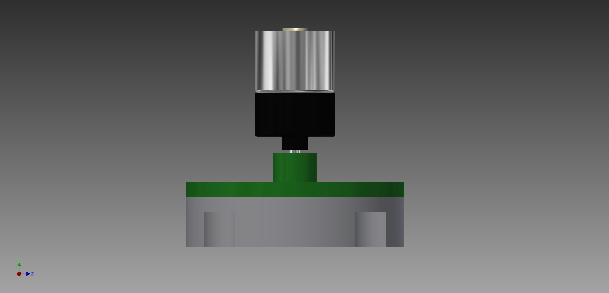

Sponge System
Simple and efficient.
What function does it fulfill ?
Rambo Robot takes off the crumbles of the table but it's not enough to have a clean table. Therefore, Rambo Robot can also clean with a wet sponge by making it turning on itself in the same direction at a constant speed. The choice of making it turning instead of linear movement is supported by first, the fact that it cleans better than with linear movement as there is no direction of cleaning and second, as a motor already has a circular movement, it is easier and cheaper ton implement.
How does it works?
At the back of the robot, a sponge system is installed. It consists of a DC motor connected by a shaft to a round cylinder support (the green and grey part on the figure above) for the sponge to fit in (the sponge is not drawed on the figure though one can easily imagine it at the bottom sticked in the grey support).

PCB
The PCB part of the DC motor is shown on the figure above.
It is drived by only 2 wires. One power supply (1.5V - 3V) and one PWM input to control the speed of the rotating sponge.
Computer Aided Design Software
To build this project, we had to be able to design our robot on the computer. The aim of that is to know the exact dimensions of our pieces and notice before starting the construction that things would go wrong. The program we used was INVENTOR.
FabLab
When the design on computer was done, we had to build the robot. Few years ago, the robots could be made thanks to different techniques : turning, milling, drilling. Today, the technology evolved and we used for this project laser cutting to cut our plates of plexi and 3D printing for complex pieces. The machinery was available for us at the FabLab
Eagle
The PCB is an important part of the project. It enables to connect the microcontroller with ll the different parts of the project. The creation of it requires to be precise on the band width and the place of everything. To do it, we used a program, which gather a lot of electrical components to build those boards, called Eagle